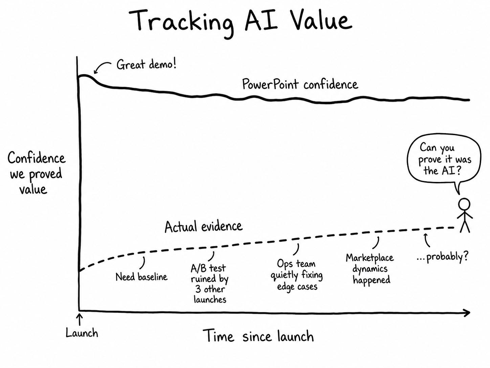

Selected Thinking
The Annoying Problem of Measuring AI Value
Published July 2026
One thing I have learned from working on AI and ML in online businesses is this:
Building the model is usually not the hardest part.
Proving that it actually created value is where the real fun starts.

And by "fun", I mean a long sequence of meetings where someone asks, "But how do we know this was because of AI?" and, annoyingly, they are right.
AI ideas usually come with very confident promises. Better conversion. Lower cost. Faster operations. Happier customers. Smarter matching. More personalisation. Less manual work. Maybe even world peace, depending on the vendor deck.
But in a real business, especially a marketplace, the value is rarely that clean.
A marketplace is not a simple website where one user clicks one button and gives us one beautiful metric. There are multiple sides, different incentives, delayed outcomes, network effects, trust issues, operational workarounds, and users doing unexpected user things, because apparently users did not read our strategy document.
So tracking AI value needs more than a dashboard. It needs a clear understanding of what value actually means.
Not All AI Value Is the Same
I usually think about AI and ML value in three buckets.
The first one is productivity AI. These are tools that help internal teams work faster or better. Things like summarising conversations, drafting responses, classifying requests, extracting information, writing notes, or helping operations teams make decisions.
The second one is customer-facing AI. These are features users directly see and interact with. Chatbots, copilots, smart onboarding assistants, guided search, personalised recommendations, or AI-generated explanations.
The third one is core ML or AI product capability. This is the stuff inside the machine room: matching, ranking, recommendations, churn prediction, fraud detection, moderation, pricing, forecasting, and decision automation.
They all sound like "AI". But measuring value for each of them is very different.
Naturally, we often try to measure them all with the same dashboard and then act surprised when it does not work.
Productivity AI: Time Saved, Apparently
Productivity AI is usually sold with the classic business case: "This will save time."
Which is fine. Time matters.
But time saved is not automatically value created.
If an AI tool saves someone five minutes on a task, what happens next? Does the team process more work? Do we reduce backlog? Do we improve SLA? Do we avoid hiring more people? Do we reduce errors? Do customers get a faster response?
Or does the saved time just quietly disappear into Slack, meetings, context switching, and checking whether the AI confidently made something up?
That is the problem with productivity metrics. "Minutes saved" sounds wonderfully measurable, but it is often a soft metric unless it changes the operating model.
For internal AI tools, I care less about theoretical time saved and more about things like:
task handling time, throughput per person, quality, rework rate, backlog size, SLA performance, escalation rate, cost per completed workflow, and employee experience.
Even then, attribution is hard.
A team may launch an AI tool at the same time as a process change, a new manager, better training, lower volume, or a spreadsheet someone secretly maintains under the desk. Suddenly performance improves and everyone wants to claim victory.
The AI team says it was the model.
Product says it was the workflow.
Ops says it was the new process.
Finance says, "Can you prove it?"
And finance is annoying because finance has a point.
Customer-Facing AI: Engagement Is Not Value
Customer-facing AI has its own trap: engagement.
A chatbot can have lots of conversations. A recommendation module can get clicks. A smart assistant can answer thousands of questions.
Great. But did it help?
This is where AI demos and business value start to drift apart.
A user chatting with an assistant is not automatically a good thing. Maybe they are engaged. Maybe they are confused. Maybe they are stuck. Maybe they are asking the same thing five times because the AI is giving very polite nonsense.
So the question should not be:
Did users use it?
The better question is:
Did it improve the next meaningful step?
In a marketplace, that next step might be job creation, application quality, booking rate, response rate, fulfilment, reduced cancellation, better retention, or less support contact.
For example, an AI assistant might help a client write a better job post. The value may not show up immediately as "more job posts". It might show up later as better provider applications, less back-and-forth, faster matching, fewer cancellations, and better marketplace liquidity.
This is exactly why simple feature engagement metrics can be misleading.
The AI feature can look busy without being useful. A bit like many meetings.
Customer-facing AI also brings safety and trust into the measurement problem. With a normal product feature, the button either works or it does not. With generative AI, the system can be half-right, overly confident, weirdly vague, technically correct but commercially useless, or safe but completely unhelpful.
So we need to measure more than usage. We need to measure answer quality, factuality, retrieval quality, guardrail triggers, escalation rates, refusal quality, user satisfaction, complaints, hallucination rate, and whether users actually achieve what they came to do.
Because "the chatbot responded" is not a success metric. That is just the chatbot being awake.
Core ML: The Most Valuable Things Are Often Invisible
Some of the most valuable AI and ML systems are the ones users never notice.
Ranking models. Matching models. Churn models. Fraud models. Moderation classifiers. Forecasting systems. Recommendation engines.
These systems are often deeply embedded in the product. If they work well, the platform just feels better. Users do not say, "Wow, what a beautifully calibrated gradient boosted model." They just find what they need and move on with their lives, rudely ignoring our technical achievement.
This creates a measurement issue.
Core ML creates value by shifting probabilities. It increases the chance of a good match. It reduces the chance of churn. It improves the chance that the right provider sees the right job. It reduces the risk of harmful content getting through.
There is rarely a single event called "AI value happened here".
Classic ML gives us a decent toolkit for this. We can use offline metrics, A/B tests, holdout groups, precision, recall, AUC, calibration, ranking metrics, drift monitoring, and business lift.
But marketplaces make even classic ML measurement harder.
A ranking model might increase conversion but concentrate demand on a small group of providers. A matching model might improve fulfilment but reduce fairness. A churn model might identify high-risk customers, but the actual value depends on whether the intervention works. A moderation model might reduce risk but increase false positives and annoy good users.
So we need both local metrics and system-level metrics.
It is not enough to measure click-through rate or conversion. We may also need fulfilment, response rate, cancellation rate, repeat usage, supply distribution, fairness, liquidity, retention, customer satisfaction, latency, and operational load.
In marketplaces, optimising one metric too aggressively is a great way to create a very impressive dashboard and a very unhealthy ecosystem. For more on why this needs a broader system view, see What Matching Is Not in Two-Sided Marketplaces.
Classic ML vs Modern AI
Classic ML and modern AI have different value measurement problems.
Classic ML is usually more bounded. Predict churn. Rank results. Detect fraud. Classify content. Recommend items. Estimate demand.
The output is narrow enough that we can often evaluate it with familiar metrics. Accuracy. Precision. Recall. AUC. Calibration. NDCG. Mean absolute error. Whatever pain we have chosen for ourselves.
The business impact can still be hard to prove, but at least the model behaviour is usually constrained.
Modern AI, especially LLM-based systems, is different.
It does not just predict a label. It talks. It reasons, or at least performs something that looks suspiciously like reasoning. It retrieves information. It calls tools. It writes content. It handles multi-turn conversations. It makes plans. Sometimes it even follows the plan. Beautiful.
This flexibility is powerful, but it makes evaluation much harder.
For classic ML, the question is often:
Did the model predict the right thing?
For modern AI, the question becomes:
Did the system behave helpfully, safely, consistently, and economically across a messy real-world interaction?
That is a much harder question.
A generative AI assistant can fail in many creative ways. It can retrieve the wrong context. It can answer the wrong question beautifully. It can give a partially correct answer. It can follow policy too strictly. It can refuse when it should help. It can help when it should refuse. It can take too long. It can cost too much. It can be useful for one customer and risky for another.
A confusion matrix is not enough for this.
Modern AI needs evaluation at multiple levels: conversation quality, task completion, retrieval relevance, tool-call correctness, factuality, safety, latency, cost, user feedback, human review, and production monitoring.
And yes, that means humans are still involved.
The robot revolution is apparently still waiting for someone to fill in the evaluation spreadsheet.
The Attribution Problem
Attribution is where many AI value conversations become painful.
Businesses do not launch AI into a clean lab environment. They launch it into reality, which is inconsiderate.
At the same time as the AI launch, there may be product changes, traffic changes, seasonality, pricing changes, marketing campaigns, new operations processes, staffing changes, or a leadership push that makes everyone behave differently for three weeks.
So when the metric moves, the obvious question is:
Was it the AI?
Maybe.
Was it the new UI?
Maybe.
Was it seasonality?
Maybe.
Was it the operations team manually fixing edge cases behind the scenes while everyone congratulated the model?
Also maybe.
This is why experiments matter. A/B tests, holdout groups, phased rollouts, matched cohorts, pre/post analysis, difference-in-differences, and synthetic controls are not academic luxuries. They are how we avoid turning AI measurement into storytelling with charts.
Of course, experimentation is not always easy in marketplaces. There can be spillover effects. One side of the market affects the other. Randomisation can be messy. Staff adoption can be inconsistent. Some use cases are too risky to expose broadly.
But the alternative is worse: launching AI and hoping the value becomes obvious.
It usually does not.
Cost Is Not a Footnote
Another thing that gets ignored in early AI discussions is cost.
Classic ML has costs: data pipelines, training, deployment, monitoring, maintenance, governance, and engineering support.
Modern AI adds a few more exciting ways to spend money: token usage, vector databases, retrieval pipelines, orchestration, guardrails, evaluation, human review, observability, vendor costs, latency optimisation, and fallback workflows.
A demo can look magical and still be economically silly.
For example, a customer-facing AI assistant may reduce support contact, but if every conversation costs too much, takes too long, or needs human review anyway, the business case can quietly collapse.
That is why I like thinking in unit economics.
What is the cost per conversation?
Cost per resolved case?
Cost per successful match?
Cost per retained customer?
Cost per automated decision?
Cost per incremental booking?
The question is not just "Can AI do this?"
It is:
Can AI do this reliably, safely, and cheaply enough that we are not just replacing human labour with very expensive autocomplete?
What I Have Found Useful
The most useful approach I have seen is to measure AI value across four layers.
First, model quality. Is the model actually good? For classic ML, this means things like precision, recall, calibration, ranking metrics, drift, bias, and latency. For modern AI, it means factuality, retrieval relevance, tool-call correctness, safety, consistency, and human evaluation.
Second, product behaviour. Does the AI improve the workflow? Are users or staff adopting it? Are they completing tasks faster? Are they dropping off less? Are they escalating less? Are they more satisfied?
Third, business outcome. Does the changed behaviour create value? This is where we look at conversion, fulfilment, retention, revenue, cost reduction, risk reduction, support deflection, liquidity, or operational capacity.
Fourth, system health. Does the system stay reliable, fair, safe, and cost-effective over time? This includes monitoring, drift, incidents, complaints, fairness, cost, latency, and governance.
The mistake is measuring only one layer.
A model can be technically good and commercially useless.
A feature can be popular and strategically irrelevant.
An automation can reduce cost and increase risk.
A chatbot can be loved by users and hated by compliance.
AI value only really exists when these layers connect.
Marketplaces Make It Extra Fun
In a marketplace, the measurement challenge is even more entertaining.
A change on one side affects the other side. Improving the client experience may increase demand but overload supply. Improving provider ranking may increase response rates but reduce diversity. Optimising for immediate conversion may hurt long-term trust.
The impact can also be delayed.
An AI feature that helps clients write better job posts may create value later through better applications, faster matching, fewer cancellations, and higher retention. If we only measure the first click, we miss the point.
This is why marketplace AI needs ecosystem metrics, not just feature metrics.
We need to understand liquidity, fulfilment, balance between supply and demand, fairness, concentration, quality, trust, and long-term retention.
Otherwise, we end up optimising a tiny part of the machine while the rest of the machine quietly catches fire.
This ecosystem perspective also shapes where AI should and should not make marketplace decisions, which I discuss in Don't Hide Marketplace Problems in a Model.
Final Thought
My main lesson is this:
AI value is not created by the model alone.
It is created by the full system around the model: the product experience, the workflow, the data, the operations, the user behaviour, the monitoring, the fallback process, and the business decision that happens afterwards.
A model does not create value because it is accurate.
A chatbot does not create value because it replies.
A copilot does not create value because someone opened it.
They create value when they change a meaningful business outcome in a way that is safe, reliable, measurable, and economically sensible.
Classic ML taught us to be disciplined about prediction quality and experimentation.
Modern AI is teaching us, sometimes painfully, that we also need to measure trust, reasoning quality, safety, cost, and workflow integration.
The best AI teams are not just the ones that can build impressive demos. Impressive demos are easy. Well, easier.
The best teams are the ones that can answer the boring but important question:
What changed because this AI exists, and how do we know?
That question is not as exciting as a live demo.
But it is usually where the actual value is hiding.